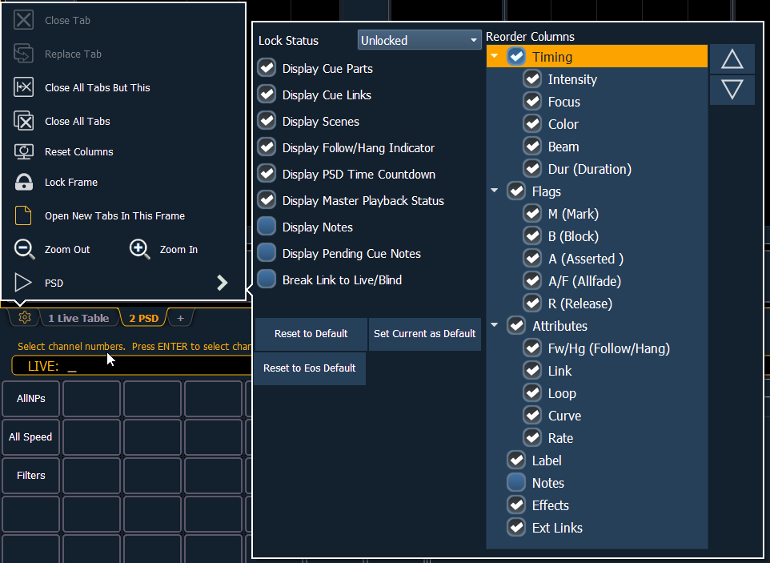
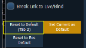

Playback Status Display Configuration
Playback Status Display (PSD) has a configuration menu, which is accessed by double clicking and then clicking on the PSD tab, or by selecting the gear icon, which is located by the tabs, and then pressing PSD.

The following options are available in the PSD Configuration Menu:
- Target Grid - this option is only available when the PSD is split, and is used along with the Lock Status option. Target Grid allows you to select either the top or bottom display. Press [Format] to split the PSD.
- Lock Status - allows you to lock the PSD to a certain cue list. When the PSD is split, you will use Target Grid to first select top or bottom of the display, and then you can use Lock Status to select the cue list.
- Display Cue Parts - displays the individual parts of a part cue. When not enabled, the number of parts for that cue will display as a superscript number beside the cue's number.
- Display Cue Links - displays the Link/ Loop information.
- Display Scenes - displays cue scene information.
- Display Follow/ Hang Indicator - displays the Follow/ Hang arrow indicator before the cue number of any cue that will be triggered by a follow or hang.
- Display PSD Time Countdown - displays the cue category times countdown in the PSD as a cue is fading.
- Display Master Playback Status - displays the current cue's status information.
- Display Notes - displays the Cue Notes in a horizontal bar at the bottom of the PSD.
- Display Pending Cue Notes - displays the Cue Notes for the pending cue in a horizontal bar at the bottom of the PSD.
- Break Link to Live/ Blind - When selecting the Live/ Blind display, the PSD will also come into view if it is currently hidden. This option allows you to break the link between the PSD and the Live/ Blind displays so that the PSD will no longer come into view when selecting Live/ Blind.
Reorder Columns
Reorder columns allows you choose what data displays in the PSD and what order it displays in. By default, all columns except notes will be displayed. The arrow keys on the right can be used to move columns around. Columns are moved in groups. To select a column header to move, click or tap the name. The check boxes suppress or enable. When an item is enabled to display, a check mark will be in the corresponding box.
Default
You can save your settings as a default state for the PSD. The default PSD is identified with parentheses.
- Reset to Default - returns the settings to the default state that you created.
- Set Current as Default - uses the current settings to create a default state. The default tab will be shown in parentheses , for example (Tab 2).

- Reset to Eos Default - returns all settings to the Eos defaults.